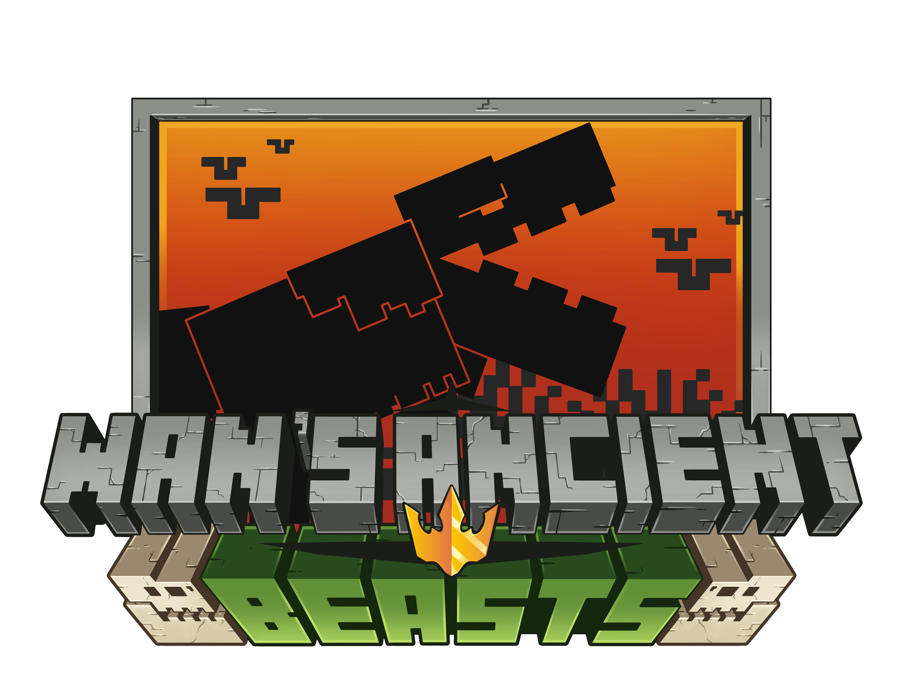
Wan's Ancient Beasts
共 74 个条目 · wan_ancient_beasts
版本: 1.3.2 · 来源: wab-1.21.1-1.3.2.jar
Wan Ancient Beasts Mod
MC百科页面: https://www.mcmod.cn/class/21020.html（Ancient Structures: Chinese - MC百科|最大的Minecraft ...）
官方介绍 （Modrinth · 中文版由 GLM AI 翻译，仅供参考）
请注意：本模组目前仍是 BETA 测试版，仅加入了少量内容，且并非没有 Bug。如果你想留下反馈，欢迎在下方评论区留言，或前往 WanMine Discord 服务器的专属频道。
准备好见到 Minecraft 远古时代的所有巨兽了吗？和嗅探兽一样，它们都是来自史前的生物，而且每一只都带来了令人惊叹的新特性！
Version 1.4.0 (16/01/2026) – 黄金三镖客更新（The Good, the Bad & the Ugly Update）
剧透预警
# **新增远古生物** ## 1) Charger（冲锋兽） * 中性生物，可以通过它的蛋复活 * 它时不时会对地坐下偷个懒 * Raider（掠袭者）的天敌：一见面就会攻击它们 * 只有在被先攻击、或玩家手持**甜菜根**时才会攻击玩家 * 如果喂它甜菜根，它会变得**极度狂暴**，见谁攻谁并造成双倍伤害（该效果在首次命中后结束） * 可以像驯马一样驯服它，但难度大得多： * 当你从它身上摔下来时，它会攻击你一次 * 喂食**甜浆果**能让驯服更容易 * 驯服后可以装上鞍并骑乘 **能力** * 按下 **C** → 头槌攻击 * 按下 **空格键** → 冲锋攻击（双倍伤害 + 击退，沿直线冲锋，需要充能） * 可以用**发光浆果**繁殖 --- ## 2) Raider（掠袭者） * 敌对生物，可以通过它的蛋复活 * 攻击性极强的掠食者，会攻击一切生物（与 Eater（吞噬者）相似） * 会被吞噬者吓到，但吞噬者不会攻击它 * 给它喂食**远古肉（Ancient Meat）**就能让它变为中性 * 变为中性后，只有被激怒才会攻击 * 群体猎手：攻击其中一只会激怒整群 * 冲锋兽的天敌 **战利品机制** * 它击杀生物时会掉落更多战利品（基础为**抢夺 I**） * 喂食新的**瓶子草（Pitcher Plant）**可以将其提升至**抢夺 IV** * 用头部攻击时，有几率掉落一根它的角 * 可以用任意种类的肉繁殖 * 会作为灾厄村民部队出现在它们的专属结构中，也会参与袭击 --- ## 3) Snatcher（夺物兽） * 中性生物，可以通过它的蛋复活 * 体型小、速度快，凭借带钩的爪子可以攀爬各种表面 * 偶尔会从玩家背包和箱子里偷走食物或物品 * 想拿回被偷的东西，打它一下就行： * 如果不及时打它，它会把物品吞下肚，物品就永远消失了 **驯服** * 让它从你的背包里偷走它最爱的食物——**Nasty Stew（恶心炖汤）** * 驯服后可以给它装上**木桶** **能力** * 看着它按下 **C** → 它会爬上你的肩膀 * 再按一次 **C** → 把它扔出去 * 如果扔在箱子或木桶附近，它会偷走战利品并带回到主人身边 --- # **新增生物** ## 1) Tamer（驯兽师） * 新的灾厄村民变种 * 出现在袭击中以及掠袭者的结构里 * 通常会骑着掠袭者随队行动 * 手持一把剑 --- # **新增物品** ## 1) Charger Armor（冲锋兽铠甲） * 可以在地牢中找到（通常出现在冲锋兽结构里） * 可以染色 * 效果与**金马铠**完全相同 --- ## 2) Raider Horns（掠袭者之角） 由掠袭者掉落，可以合成出三种变体： ### • The Fearsome Horn（骇人之角） * 用 **Eater Teeth（吞噬者之牙）**合成 * 对 20 格范围内的所有生物施加**恐惧（Fear）**效果，持续 5 秒 * 冷却时间 10 秒 ### • The Shrieking Horn（尖啸之角） * 用**回响碎片**合成 * 发出强大的爆震，对 20 格范围内造成沉重伤害 * 冷却时间 10 秒 ### • The Spectral Horn（幽冥之角） * 用**幻翼膜**合成 * 立即击杀 20 格范围内的所有**幻翼**和**恼鬼** * 冷却时间 10 秒 --- ## 3) Nasty Stew（恶心炖汤） * 用于驯服夺物兽 --- # **新增嗅探兽植物** 嗅探兽现在可以挖出以下新种子： ## 1) Rafflesia（大王花） * 装饰性花卉 * 效果类似**孢子花**，但长在地面上 ## 2) Sundew（茅膏菜） * 装饰性植物 * 会吸引飞虫（类似萤火虫灌木丛） ## 3) Equisetum（木贼） * 装饰性史前植物 ## 4) Moonflower（月光花） * 装饰性花卉 * 表现类似**粉红色花簇** * 可以放置在泥土类方块上 ## 5) Ginkgo Trees（银杏树） * 新树苗，会长成 1x1 或 2x2 的树木 * 包含完整的**银杏木套装**（木板、门等） ## 6) Olden Moss（远古苔藓） * 新的苔藓变种 --- # **新增方块与机制** ## 1) Paleo Table（古生物工作台） * 用**4 块木板**和**2 片陶片**合成 * 用途： * 复制陶片 * 把巨兽的蛋变成装饰方块 * 同时是**古生物学家（Paleontologist）**职业的工作站点方块 --- ## 2) Paleontologist（古生物学家，村民职业） * 通过古生物工作台获得 * 可以升级以解锁新的交易 --- ## 3) Wandering Paleontologist（流浪古生物学家） * 只在**发掘场（Dig Site）**出现 * 拥有独特的交易 * 由原先的古生物学家重做而来 --- ## 4) 新的旗帜图案 * 可用于盾牌的新图案 --- # **新增结构** ## 1) The Ruined Castle（废弃城堡） * 出现在**平原**生物群系 ## 2) The Training Outpost（训练前哨站） * 出现在**平原**生物群系 ## 3) The Primal Log（太古巨木） * 出现在**原始（Old Growth）**类生物群系Version 1.3.2 (22/09/2025) - 热修复 #3（Hotfix #3）
剧透预警
- 支持 1.21.1 - Toxlacanth（毒腔棘鱼）模型重制 - 新增进度 - 新增语言 - 修复 BugVersion 1.3.0 (10/08/2025) - 冲浪更新（Surf Update）
剧透预警
# **新增远古生物** ## Surfer（冲浪者） - 蛋可以在 Dead Coral（死亡珊瑚）中找到 - 它是和平生物 - 幼年时可以喂它任意种类的珊瑚：如果喂食大量同种珊瑚（32 到 64 个），它会根据珊瑚种类改变颜色；如果喂的是多种颜色（同样在该数量范围内），则不会变色 - 既能在水里游，也能在陆上走，不过在陆地上会慢得多 - 在陆地上它会惬意地晒太阳：如果你靠近得太快，它会受惊逃跑；如果你潜行靠近，它就会安静不动；只要你友好而缓慢地接近，就能与它互动并尝试驯服它 - 驯服它需要在它放松时喂它珊瑚扇（珊瑚种类取决于冲浪者的颜色；如果它还是默认颜色，那么任何珊瑚都可以） - 驯服后可以装鞍骑乘；它在陆地上行动缓慢，但在水中和水下速度很快（比船稍快一点） - 冲浪者能储存大量氧气，骑乘时按下 C 键，它可以为你恢复氧气，最多 3 次 - 在水中靠近水面时按下空格键，它会跃出水面并冲出很远的距离（需要 10 秒充能） - 可以用海泡菜繁殖 - 它还可以装备“冲浪者铠甲（Surfer Armor）”：这会提供一层额外保护，但会降低它的速度（变得和船一样快） # **新增物品** ## Surfer Armor（冲浪者铠甲） - 可以用鳞甲（Turtle Scute）合成 - 效果和狼铠完全一样，会替它承受一切伤害，改为消耗自身耐久 - 无法染色 - 可以用鳞甲修复（和狼铠一样） # **新增结构** ## Dead Coral（死亡珊瑚） - 出现在石岸生物群系Version 1.2.1 (13/06/2025) - 热修复 #2（Hotfix #2）
剧透预警
- 新增翻译：意大利语、波兰语、俄语和中文 - 新增进度 - 修复了古生物学家的交易 - 修复了 Walker（行走者）的生命值问题 - 修复 BugVersion 1.2.0 (02/05/2025) - 古生物更新（Paleo Update）
剧透预警
# **新增生物** ## 1) Paleontologist（古生物学家） - 属于村民群体的和平生物 - 在本模组的所有结构中都有极低概率生成 - 在发掘场中更常见 - 可以与你交易本模组中的物品 # **新增方块** ## 1) Crusher Spikes（碾碎者尖刺） - 碾碎者尖刺现在既可以放在地面上，也可以像钟乳石那样放在方块底部 - 它们极其致命，小心各种可能的陷阱 ## 2) Quicksand（流沙） - 一种新方块，和细雪非常相似，找化石的时候最好离它远点 ## 3) Fossils（化石） - 一种新的装饰方块，只在发掘场出现，也可以通过与古生物学家交易获得 # **新增结构** ## 1) The Dig Site（发掘场） - 可在所有生物群系中找到 - 依据生物群系不同，里面有大量可疑的沙子、沙砾、红沙或冰，让你能找到所有远古巨兽的蛋（包括嗅探兽） ## 2) 恶地神庙（Mesa Temple）、冰刺城堡（Ice Spike Castle）和沙漠遗迹（Desert Ruins）的新变种 - 来体验经典 WAB 结构的新变种吧，还带了一些别出心裁的小变化 # **新附魔：远古棍棒（Ancient Club）** ## 1) Blood Thirst（嗜血） - 让你在处于任意药水效果时造成更多伤害 - 与 Life Steal（生命窃取）不兼容 ## 2) Life Steal（生命窃取） - 让你每次命中敌人时吸收半颗心 - 与嗜血（Blood Thirst）不兼容 ## 3) Hunter's Mark（猎人印记） - 对动物和远古巨兽造成更多伤害 # **新特性** ## 1) 悬挂滑翔翼（Hang Glider）染色自定义 - 把一份染料和一个悬挂滑翔翼放进工作台，就能改变羽毛的颜色 ## 2) 复制陶片 - 把一片陶片和一块红砖放进工作台，就能得到 2 片相同的陶片Version 1.1.5 (12/03/2025) - 热修复（Hotfix）
剧透预警
- 移除了 Sherds API 依赖 - 新增进度 - 对所有远古生物（+ 嗅探兽）进行了整体平衡性调整 - 现在挖掘可疑的冰改用凿子（Chisel）而不是刷子。对着方块多次右键，稍等片刻后它就会掉落战利品。 - 远古棍棒模型重制与升级： - 伤害与铁剑相当 - 攻速与斧相当 - 现在命中目标的次数越多，每次造成的伤害就越高（每多命中一次 +1 点伤害）Version 1.1.0 (22/12/2024) - 飞行者更新（Flyers Update）
剧透预警
# **新增远古生物** ## 1) Glider（滑翔者） - 蛋可以在废弃村庄（Abandoned Village）中找到 - 被动生物 - 可以用河豚驯服 - 驯服后可以让它坐下 - 唱片机播放音乐时它会开始跳舞 - 跳舞时可能会掉落几根羽毛 - 可以用鲑鱼繁殖 ## 2) Soarer（翱翔者） - 蛋可以在冰冻巢穴（Frozen Nest）中找到 - 中性生物：如果玩家先动手，它就会攻击玩家 - 一见到毒腔棘鱼就会发起攻击 - 可以用生毒腔棘鱼（Raw Toxlacanth）驯服 - 驯服后它还能帮你攻击目标 - 驯服后可以装鞍骑乘 - 有了这个生物，你在游戏前期就能长距离飞行，但它的体力并非无限，有时需要降落到地面恢复 - 可以用河豚繁殖 # **新增生物** ## 1) Toxlacanth（毒腔棘鱼） - 非常罕见的生物，可以在以下地点找到： - 含水洞穴 - 温水海洋 - 沼泽 - 红树林沼泽 - 可以用桶捕捉 - 它不在钓鱼战利品之列 - 如果打它但没打死，它会放出一小团云雾，使你获得反胃、中毒和虚弱效果 - 击杀后会掉落它自身 # **新增物品** ## 1) Glider’s Feather（滑翔者羽毛） - 这个物品是滑翔者跳舞时掉落的 - 合成箭时可以代替普通羽毛 - 还可以用来合成新物品——悬挂滑翔翼 ## 2) Hang Glider（悬挂滑翔翼） - 可以当作简易版鞘翅使用 - 让玩家能够自由滑翔，而不是一路坠向死亡 - 每次滑翔都会损耗耐久 - 可以附魔：耐久（Unbreaking）、经验修补（Mending） - 与鞘翅不同，不能用烟花火箭加速或向上飞 ## 3) Raw Toxlacanth（生毒腔棘鱼） - 可以烹饪后食用，也可以生吃 - 可以用来驯服翱翔者 - 生吃会造成反胃、中毒和虚弱 ## 4) Cooked Toxlacanth（熟毒腔棘鱼） - 可以食用 - 能提供和远古肉一样的饱和度 - 但味道依然难吃得要命，所以会造成反胃 # **新增方块** ## 1) Straw Block（稻草块） - 可以用小麦和木棍合成 - 可以进一步合成楼梯和台阶 - 可以在冰冻巢穴中找到 - 可以用来合成巢穴（Nest） ## 2) Frozen Straw Block（冰冻稻草块） - 可以在冰冻巢穴中找到 ## 3) Nest（巢穴） - 可以用稻草块合成 - 可以用来加速蛋的孵化，速度是平时的 3 倍 - 如果放进去的是鸡蛋，它们不会孵化，此时它只作为装饰方块 # **新增结构** # 1) The Abandoned Village（废弃村庄） - 可以在丛林生物群系中找到 - 那里有大量可疑的沙砾，让你能找到： - 滑翔者的蛋 - Fall Pottery Sherd（坠落陶片） # 2) The Frozen Nests（冰冻巢穴） - 可以在山地中找到 - 那里有大量可疑的沙砾，让你能找到： - 翱翔者的蛋 - Beak Pottery Sherd（鸟喙陶片）Version 1.0.0 (27/09/2024)
剧透预警
# **新增远古生物** ## 1) Eater（吞噬者）  - 蛋可以在恶地神庙中找到 - 中性生物：只有当你靠得太近，或靠近它的幼崽时才会攻击 - 它会吓跑所有生物（凋灵和末影龙除外） - 它的撕咬可以击碎盾牌 - 被激怒时它会发出咆哮，使你获得数秒的“恐惧（Fear）”效果（新效果，会让你暂时无法操控自己的角色） - 如果你给它一些“远古肉”，它有几率赐予你“头狼（alpha）”效果，持续 2 分 30 秒（新效果，每击杀一个目标，你的攻击伤害提升半颗心） - 如果它击杀了实体，有几率掉落“吞噬者之牙（Eater Tooth）”（新物品，可以用来合成新武器“远古棍棒（Ancient Club）”） - 它会捕猎一切动物和掠夺者 - 无法驯服 - 可以用任意种类的肉繁殖 ## 2) Walker（行走者）  - 蛋可以在冰刺城堡中找到 - 被动生物 - 只能在幼年时期用孢子花驯服 - 驯服后可以同时容纳 4 名玩家骑乘 - 驯服后可以装上箱子（拥有 49 格存储空间） - 可以直接走过栅栏和墙 - 可以用杜鹃树叶治疗 - 可以用孢子花繁殖 ## 3) Crusher（碾碎者）  - 蛋可以在沙漠遗迹中找到 - 中性生物：只有在你先攻击它时才会反击 - 免疫弹射物 - 你可以用凿子偷走它的一根尖刺，但这会把它惹怒 - 无法驯服 - 可以用垂根繁殖 # **新增物品** ## 1) Ancient Klub（远古棍棒）：新武器，伤害比肩铁斧，攻速媲美普通剑   ## 2) Reinforced Shield（强化盾牌）：在锻造台中用碾碎者的尖刺和锻造模板升级盾牌即可合成。这面盾牌会对所有近战类型的攻击者造成伤害（和普通盾牌一样能挡下弹射物）  # **新增结构** ## 1) Mesa Temple（恶地神庙）  ## 2) Ice Spike Castle（冰刺城堡）  ## 3) Desert Ruins（沙漠遗迹） 依赖：Geckolib
翻译贡献者（Discord 用户名）：
- 意大利语：@Angelinho
- 波兰语：@pikszo_28839
- 俄语：@cbinmozarta
- 乌克兰语：@tosen_0
- 中文：@ext_ramen
WAB 模组目前仍在开发中，我们希望很快就能加入更多内容！
由 GLM AI 翻译，仅供参考
查看英文原文（Modrinth）
Please note that this is a BETA version of the mod that adds only a few content and is not bug-free. In case you want to leave feedback, feel free to use the comment space below or the dedicated channel in the WanMine Discord server.
Are you ready to meet all the beasts of Minecraft's ancient past? Like the Sniffer, they are all creatures from prehistory and each one brings with it amazing new features!
Version 1.4.0 (16/01/2026) – The Good, the Bad & the Ugly Update
Spoiler
# **NEW ANCIENT CREATURES** ## 1) Charger * Neutral Mob that can be brought back to life with its eggs * From time to time it will sit down and loaf * Natural enemy of Raiders: attacks them on sight * Attacks the player only if attacked first or if the player is holding a **Beetroot** * If fed a Beetroot it becomes **over-aggressive**, attacking anyone on sight and dealing double damage (effect ends after the first hit) * Can be tamed like a horse, but it’s much harder: * When you fall from it, it will attack you once * Feeding **Sweet Berries** makes taming easier * Once tamed, it can be equipped with a saddle and ridden **Abilities** * Press **C** → Headbutt attack * Press **Spacebar** → Charge attack (double damage + knockback, straight line, requires recharge) * Can be bred with **Glow Berries** --- ## 2) Raider * Hostile Mob that can be brought back to life with its eggs * Highly aggressive predator that attacks every mob (similar to the Eater) * Scared by the Eater, but the Eater does not attack it * Can be made neutral by giving it **Ancient Meat** * Once neutral, it will attack only if provoked * Pack hunter: attacking one will aggro the entire pack * Natural enemy of Chargers **Looting Mechanic** * When it kills a mob, it drops more loot (base **Looting I**) * Can be increased up to **Looting IV** by feeding it the new **Pitcher Plant** * When attacking with its head, it has a chance to drop one of its horns * Can be bred with any type of meat * Found as Illager troops in their own structures and during Raids --- ## 3) Snatcher * Neutral Mob that can be brought back to life with its eggs * Small and fast, can climb surfaces thanks to hooked claws * Occasionally steals food or items from player inventories and chests * To retrieve stolen items, hit it once: * If not hit in time, it will devour the item and it will be lost forever **Taming** * Make it steal its favorite food, the **Nasty Stew**, from your inventory * Once tamed, it can be equipped with a **Barrel** **Abilities** * Press **C** while looking at it → it climbs onto your shoulder * Press **C** again → throw it * If thrown near a chest or barrel, it will steal loot and bring it back to the owner --- # **NEW MOBS** ## 1) Tamer * New Illager variant * Found during Raids and in Raider structures * Usually rides a Raider troop * Equipped with a sword --- # **NEW ITEMS** ## 1) Charger Armor * Found in dungeons (commonly in Charger structures) * Can be dyed * Works exactly like **Golden Horse Armor** --- ## 2) Raider Horns Dropped by Raiders and craftable into three variants: ### • The Fearsome Horn * Crafted with **Eater Teeth** * Applies the **Fear** effect to all mobs in a 20-block radius for 5 seconds * 10s cooldown ### • The Shrieking Horn * Crafted with **Echo Shards** * Emits a powerful blast dealing heavy damage in a 20-block radius * 10s cooldown ### • The Spectral Horn * Crafted with **Phantom Membrane** * Instantly kills all **Phantoms** and **Vexes** in a 20-block radius * 10s cooldown --- ## 3) Nasty Stew * Used to tame the Snatcher --- # **NEW SNIFFER PLANTS** The Sniffer can now find the following new seeds: ## 1) Rafflesia * Decorative flower * Works like a **Spore Blossom**, but on the ground ## 2) Sundew * Decorative plant * Attracts flies (similar to a firefly bush) ## 3) Equisetum * Decorative prehistoric plant ## 4) Moonflower * Decorative flower * Behaves like **Pink Petals** * Can be placed on earth-like blocks ## 5) Ginkgo Trees * New saplings that grow into 1x1 or 2x2 trees * Includes a full **Ginkgo Wood Set** (planks, doors, etc.) ## 6) Olden Moss * New moss variant --- # **NEW BLOCKS & MECHANICS** ## 1) Paleo Table * Crafted with **4 planks** and **2 pottery sherds** * Used to: * Duplicate pottery sherds * Transform beast eggs into decorative blocks * Acts as the job site block for the **Paleontologist** profession --- ## 2) Paleontologist (Villager Profession) * Created using the Paleo Table * Can be leveled up to unlock new trades --- ## 3) Wandering Paleontologist * Found exclusively in **Dig Sites** * Has unique trades * Rework of the former Paleontologist --- ## 4) New Banner Patterns * New patterns usable on shields --- # **NEW STRUCTURES** ## 1) The Ruined Castle * Found in **Plains** biomes ## 2) The Training Outpost * Found in **Plains** biomes ## 3) The Primal Log * Found in **Old Growth** biomesVersion 1.3.2 (22/09/2025) - Hotfix #3
Spoiler
- 1.21.1 support - Toxlacanth remodel - New Advancements - New languages - Bug fixingVersion 1.3.0 (10/08/2025) - Surf Update
Spoiler
# **NEW ANCIENT CREATURE** ## Surfer - Eggs found in the Dead Coral - It’s a peaceful Mob - It can be fed any type of coral and if fed a big quantity of the same type (from 32 to 64) as a baby, it will change colour depending on the type of coral; if fed with mutiple colours (in that range of 32 to 64) it will not change colour - Can both travel in water and on land, though on land it will be significantly slower - When on land it will relax basking in the sun: if you go near it too fast it will get scared and it will try to run away, while if you crouch it will remain still; if you approach it nicely and slow you will be able to interact with it and attempt taming it - To tame it you'll have to feed it Coral fan (the type of coral depends on the colour of the Surfer, if it has its base color then any type of coral is good) while it's relaxed - Once tamed it can be equipped with a saddle and you'll be able to ride it; it can travel slowly on land, and fast in and under water (slightly faster than a boat) - The Surfer is able to store big quantities of oxygen and if you press c while riding it, it will be able to restore your oxygen up to 3 times - If you press space bar near the surface while in the water it will jump out and will cover a great distance (it takes 10 second to recharge) - It can be bred with sea pickles - It can be also equipped with the “Surfer Armor”: this will add a layer of protection but will reduce its speed (now beign as fast as a boat) # **NEW ITEM** ## Surfer Armor - It can be crafted with Turtle scutes - It works exactly like dog armor and will tank any damage, consuming its durability instead - Cannot be dyed - Can be Repared (like-dog armor) with turtle scute # **NEW STRUCTURE** ## Dead Coral - Can be found in the Stony Shore biomeVersion 1.2.1 (13/06/2025) - Hotfix #2
Spoiler
- New translations added: Italian, Polish, Russian and Chinese - New Advancements - Fixed Paleontologist trades - Fixed Walker health problem - Bug fixingVersion 1.2.0 (02/05/2025) - Paleo Update
Spoiler
# **NEW MOBS** ## 1) Paleontologist - Peaceful Mob that belongs to the Villager Group - It rarely spawns in every structure of the mod - It spawns more commonly in Dig Site - It can trade with you for items found in the mod # **NEW BLOCKS** ## 1) Crusher Spikes - Crusher spikes can now be placed both on the ground and on the bottom of blocks like drip stones - They are highly deadly so look out for any possible traps ## 2) Quicksand - A new block that is pretty similar to powder snow and that you should avoid while looking for fossils ## 3) Fossils - A new decoration block found only in dig sites and as a trade with the paleontologist # **NEW STRUCTURES** ## 1) The Dig Site - Can be found in every biome - It has lots of Suspicious Sand, Gravel, Red Sand or Ice depending on the biome that allows you to find all the ancient beasts' eggs (including the Sniffer) ## 2) New variants of: Mesa Temple, Ice Spike Castle and Desert Ruins - Enjoy new variants of the classic WAB structures with some nice twists # **NEW ENCHANTEMENTS: ANCIENT CLUB** ## 1) Blood Thirst - Makes you deal more damage under any potion effect - Not compatible with Life Steal ## 2) Life Steal - Makes You absorb half a heart for every hit you deal to your enemy - Not Compatible with Blood Thirst ## 3) Hunter's Mark - Deals More damage to Animals and Ancient Beats # **NEW FEATURES** ## 1) Hang Glider Dyeable Customization - Put a dye and an Hang Glider in the crafting table and you'll be able to change colour to the feathers ## 2) Duplicate Pottery Sherds - Put a sherd with a brick in a crafting table and you’ll get 2 sherds of the one you put in the craftingVersion 1.1.5 (12/03/2025) - Hotfix
Spoiler
- Removed Sherds API dependency - New advancements - General rebalance of all ancient mobs (+ Sniffer) - Now Chisel is used to excavate suspicious ice instead of Brush. Right-click on the block several times, and after quite a while it will drop the loot. - Remodel and upgrade of the Ancient club: - as much damage as an Iron sword - as fast as an Axe - now the more you hit your target the more damage it will deal every time (1hp x addition hit)Version 1.1.0 (22/12/2024) - Flyers Update
Spoiler
# **NEW ANCIENT CREATURES** ## 1) Glider - Egg found in the Abandoned Village - Passive mob - Can be tamed with pufferfish - Once tamed you can make it sit - When playing music on a jukebox it will start dancing - While dancing it can lose some feathers - It can be bred with Salmon ## 2) Soarer - Egg found in the Frozen Nest - Neutral Mob: it will attack the player if the player attacks it first - It will attack Toxlacanth on sight - Can be tamed with Raw Toxlacanth - Once tamed it will also be able to attack targets - Once tamed you can put a saddle on it and ride it - With this creature you’ll be able to fly for long distances in early game, but its stamina is not infinite and sometimes it will have to restore it by go to the ground - It can be bred with pufferfish # **NEW MOBS** ## 1) Toxlacanth - Very rare mob that can be found in: - Waterlogged Caves - Warm Oceans - Swamps - Mangrove Swamps - It can be bucketed - Its not part of the fishing lootable - If hit without killing it will spawn a little cloud that can cause Nausea, Poison and Weakness - Once slayed it will drop itself # **NEW ITEMS** ## 1) Glider’s Feather - This item is dropped by the Glider while dancing - It can be used in substitution of regular feathers when crafting arrows - It can be used to craft a new item the Hang Glider ## 2) Hang Glider - Can be used as a primitive elytra - It allows the player to freely glide instead of falling to its doom - It loses durability every time you glide - It can be enchanted with: Unbreaking, Mending - Unlike elytra you cannot use rocket to go faster or go upwards ## 3) Raw Toxlacanth - It can be cooked or eaten Raw - It can be used to tame the Soarer - If eaten Raw it will cause Nausea, Poison and Weakness ## 4) Cooked Toxlacanth - It can be eaten - It gives as much saturation as the ancient meat - But it still has a terrible taste, so it will cause Nausea # **NEW BLOCKS** ## 1) Straw Block - Can be crafted with Wheat and Sticks - Can be crafted into stairs and slabs - Can be Found in Frozen Nests - Can be used to craft the Nest ## 2) Frozen Straw Block - Can be found in Frozen Nests ## 3) Nest - Can be Crafted with straw Blocks - It can be used to speed up the hatching of egg, making it 3x faster than normal - If you place chicken eggs in it they will not hatch and it will function as a decorative block # **NEW STRUCTURES** # 1) The Abandoned Village - Can be found in Jungle biomes - It has lots of Suspicious Gravel that allows you to find: - Glider Eggs - Fall Pottery Sherd # 2) The Frozen Nests - Can be found in Mountains - It has lots of Suspicious Gravel that allows you to find: - Soarer Eggs - Beak Pottery SherdVersion 1.0.0 (27/09/2024)
Spoiler
# **NEW ANCIENT CREATURES** ## 1) Eater  - Egg found in Mesa Temple - Neutral: attacks only if you are too close to it or you are near a baby - It scares every mob (except the Wither Boss and the Ender Dragon) - Its bites breaks the shields - When aggred it’ll roars and that will give you the “Fear” effect for a few seconds (a new effect that will make you no longer control your character) - If you give it some “ancient meat” there’s the chance it’ll give the “alpha” effect for 2:30 minutes (a new effect that increases your attacks by half heart for each kill) - If it kill an entity there’s a chance that it’ll drop an “Eater Tooth” (a new item that can be used to craft a new weapon, the “Ancient Club”) - It hunts every animal and pillagers - Cannot be tamed - Can be bred with every type of meat ## 2) Walker  - Egg found in Ice Spike Castle - Passive - Can be tamed only when is baby with spore blossoms - Once tamed 4 players can ride it at the same time - Once tamed can be equipped with chests (it has 49 slots of storage) - Can walk over fences and walls - Can be heal with azalea leaves - Can be bred with spore blossoms ## 3) Crusher  - Egg found in Desert Ruins - Neutral: attacks only if you attack it first - It’s immune to projectyles - You can steal one of its spike with a chisel but it makes the Crusher angry - Cannot be tamed - Can be bred with hanging roots # **NEW ITEMS** ## 1) Ancient Klub: new weapon strong as an iron axe but fast as a normal sword   ## 2) Reinforced Shield: it can be crafted upgrading a shield in the smithing table with a Crusher's Spike and the Upgrade trim. This shield will deal damage to everything that use a melee attack type (like a shield it negates projectiles)  # **NEW STRUCTURES** ## 1) Mesa Temple  ## 2) Ice Spike Castle  ## 3) Desert Ruins Dependencies: Geckolib
Translations (@Discord username):
- Italiano: @Angelinho
- Polish: @pikszo_28839
- Russian: @cbinmozarta
- Ukranian: @tosen_0
- Chinese: @ext_ramen
The WAB mod is currently still in development and we hope to add more content very soon!
资料来源：Wan's Ancient Beasts
物品与方块
?远古杀槌
wan_ancient_beasts:ancient_club · 物品 Smithing Template
Smithing Template
wan_ancient_beasts:ancient_upgrade_smithing_template · 物品 喙部陶片
喙部陶片
wan_ancient_beasts:beak_pottery_sherd · 物品 黑色悬挂式滑翔器
黑色悬挂式滑翔器
wan_ancient_beasts:black_hang_glider · 物品 蓝色悬挂式滑翔器
蓝色悬挂式滑翔器
wan_ancient_beasts:blue_hang_glider · 物品 棕色悬挂式滑翔器
棕色悬挂式滑翔器
wan_ancient_beasts:brown_hang_glider · 物品
wan_ancient_beasts:charger_skull · 方块 凿子
凿子
wan_ancient_beasts:chisel · 物品 熟远古兽肉
熟远古兽肉
wan_ancient_beasts:cooked_ancient_meat · 物品 熟毒棘鱼
熟毒棘鱼
wan_ancient_beasts:cooked_toxlacanth · 物品 碎岩兽蛋
碎岩兽蛋
wan_ancient_beasts:crusher_egg · 方块
wan_ancient_beasts:crusher_skull · 方块 碎岩兽刷怪蛋
碎岩兽刷怪蛋
wan_ancient_beasts:crusher_spawn_egg · 物品 碎岩兽尖刺
碎岩兽尖刺
wan_ancient_beasts:crusher_spike · 方块 青色悬挂式滑翔器
青色悬挂式滑翔器
wan_ancient_beasts:cyan_hang_glider · 物品 噬颚兽蛋
噬颚兽蛋
wan_ancient_beasts:eater_egg · 方块 噬颚兽头颅
噬颚兽头颅
wan_ancient_beasts:eater_skull · 方块噬颚兽刷怪蛋
wan_ancient_beasts:eater_spawn_egg · 物品 噬颚兽牙齿
噬颚兽牙齿
wan_ancient_beasts:eater_tooth · 物品 坠落陶片
坠落陶片
wan_ancient_beasts:fall_pottery_sherd · 物品 化石陶片
化石陶片
wan_ancient_beasts:fossil_pottery_sherd · 物品冰冻远古兽肉
wan_ancient_beasts:frozen_ancient_meat · 物品
wan_ancient_beasts:frozen_straw_block · 方块 滑翔鸟蛋
滑翔鸟蛋
wan_ancient_beasts:glider_egg · 方块 滑翔鸟羽毛
滑翔鸟羽毛
wan_ancient_beasts:glider_feather · 物品
wan_ancient_beasts:glider_skull · 方块滑翔鸟刷怪蛋
wan_ancient_beasts:glider_spawn_egg · 物品 灰色悬挂式滑翔器
灰色悬挂式滑翔器
wan_ancient_beasts:gray_hang_glider · 物品 绿色悬挂式滑翔器
绿色悬挂式滑翔器
wan_ancient_beasts:green_hang_glider · 物品 悬挂式滑翔器
悬挂式滑翔器
wan_ancient_beasts:hang_glider · 物品 颌骨陶片
颌骨陶片
wan_ancient_beasts:jaw_pottery_sherd · 物品 浅蓝色悬挂式滑翔器
浅蓝色悬挂式滑翔器
wan_ancient_beasts:light_blue_hang_glider · 物品 浅灰色悬挂式滑翔器
浅灰色悬挂式滑翔器
wan_ancient_beasts:light_gray_hang_glider · 物品 黄绿色悬挂式滑翔器
黄绿色悬挂式滑翔器
wan_ancient_beasts:lime_hang_glider · 物品 品红色悬挂式滑翔器
品红色悬挂式滑翔器
wan_ancient_beasts:magenta_hang_glider · 物品
wan_ancient_beasts:nest · 方块 橙色悬挂式滑翔器
橙色悬挂式滑翔器
wan_ancient_beasts:orange_hang_glider · 物品古生物学家刷怪蛋
wan_ancient_beasts:paleontologist_spawn_egg · 物品 粉色悬挂式滑翔器
粉色悬挂式滑翔器
wan_ancient_beasts:pink_hang_glider · 物品 紫色悬挂式滑翔器
紫色悬挂式滑翔器
wan_ancient_beasts:purple_hang_glider · 物品
wan_ancient_beasts:quick_red_sand · 方块红流沙桶
wan_ancient_beasts:quick_red_sand_bucket · 物品
wan_ancient_beasts:quick_sand · 方块流沙桶
wan_ancient_beasts:quick_sand_bucket · 物品
wan_ancient_beasts:raider_skull · 方块 生远古兽肉
生远古兽肉
wan_ancient_beasts:raw_ancient_meat · 物品 红色悬挂式滑翔器
红色悬挂式滑翔器
wan_ancient_beasts:red_hang_glider · 物品加固盾牌
wan_ancient_beasts:reinforced_shield · 物品 Smithing Template
Smithing Template
wan_ancient_beasts:sniff_armor_trim_smithing_template · 物品
wan_ancient_beasts:sniffer_skull · 方块 翱翔鸟蛋
翱翔鸟蛋
wan_ancient_beasts:soarer_egg · 方块翱翔鸟头颅
wan_ancient_beasts:soarer_skull · 方块翱翔鸟刷怪蛋
wan_ancient_beasts:soarer_spawn_egg · 物品 Smithing Template
Smithing Template
wan_ancient_beasts:spike_armor_trim_smithing_template · 物品 尖刺陶片
尖刺陶片
wan_ancient_beasts:spike_pottery_sherd · 物品 麦秸稻草方块
麦秸稻草方块
wan_ancient_beasts:straw_block · 方块
wan_ancient_beasts:straw_slab · 方块
wan_ancient_beasts:straw_stairs · 方块 漫步陶片
漫步陶片
wan_ancient_beasts:stroll_pottery_sherd · 物品 破浪兽盔甲
破浪兽盔甲
wan_ancient_beasts:surfer_armor · 物品 破浪兽蛋
破浪兽蛋
wan_ancient_beasts:surfer_egg · 方块
wan_ancient_beasts:surfer_skull · 方块破浪兽刷怪蛋
wan_ancient_beasts:surfer_spawn_egg · 物品
wan_ancient_beasts:suspicious_ice · 方块
wan_ancient_beasts:suspicious_red_sand · 方块 浪潮陶片
浪潮陶片
wan_ancient_beasts:tide_pottery_sherd · 物品 毒棘鱼
毒棘鱼
wan_ancient_beasts:toxlacanth · 物品毒棘鱼桶
wan_ancient_beasts:toxlacanth_bucket · 物品毒棘鱼刷怪蛋
wan_ancient_beasts:toxlacanth_spawn_egg · 物品 巨行兽蛋
巨行兽蛋
wan_ancient_beasts:walker_egg · 方块
wan_ancient_beasts:walker_skull · 方块巨行兽刷怪蛋
wan_ancient_beasts:walker_spawn_egg · 物品 白色悬挂式滑翔器
白色悬挂式滑翔器
wan_ancient_beasts:white_hang_glider · 物品 黄色悬挂式滑翔器
黄色悬挂式滑翔器
wan_ancient_beasts:yellow_hang_glider · 物品
wan_ancient_beasts:ancient_club · 物品
Smithing Templatewan_ancient_beasts:ancient_upgrade_smithing_template · 物品
喙部陶片wan_ancient_beasts:beak_pottery_sherd · 物品
黑色悬挂式滑翔器wan_ancient_beasts:black_hang_glider · 物品
蓝色悬挂式滑翔器wan_ancient_beasts:blue_hang_glider · 物品
棕色悬挂式滑翔器wan_ancient_beasts:brown_hang_glider · 物品
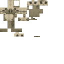
冲锋兽头颅wan_ancient_beasts:charger_skull · 方块
凿子wan_ancient_beasts:chisel · 物品
熟远古兽肉wan_ancient_beasts:cooked_ancient_meat · 物品
熟毒棘鱼wan_ancient_beasts:cooked_toxlacanth · 物品
碎岩兽蛋wan_ancient_beasts:crusher_egg · 方块
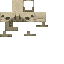
碎岩兽头颅wan_ancient_beasts:crusher_skull · 方块
碎岩兽刷怪蛋wan_ancient_beasts:crusher_spawn_egg · 物品
碎岩兽尖刺wan_ancient_beasts:crusher_spike · 方块
青色悬挂式滑翔器wan_ancient_beasts:cyan_hang_glider · 物品
噬颚兽蛋wan_ancient_beasts:eater_egg · 方块
噬颚兽头颅wan_ancient_beasts:eater_skull · 方块
噬颚兽刷怪蛋wan_ancient_beasts:eater_spawn_egg · 物品
噬颚兽牙齿wan_ancient_beasts:eater_tooth · 物品
坠落陶片wan_ancient_beasts:fall_pottery_sherd · 物品
化石陶片wan_ancient_beasts:fossil_pottery_sherd · 物品冰冻远古兽肉
wan_ancient_beasts:frozen_ancient_meat · 物品
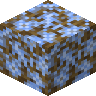
冰冻麦秸稻草方块wan_ancient_beasts:frozen_straw_block · 方块
滑翔鸟蛋wan_ancient_beasts:glider_egg · 方块
滑翔鸟羽毛wan_ancient_beasts:glider_feather · 物品
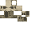
滑翔鸟头颅wan_ancient_beasts:glider_skull · 方块
滑翔鸟刷怪蛋wan_ancient_beasts:glider_spawn_egg · 物品
灰色悬挂式滑翔器wan_ancient_beasts:gray_hang_glider · 物品
绿色悬挂式滑翔器wan_ancient_beasts:green_hang_glider · 物品
悬挂式滑翔器wan_ancient_beasts:hang_glider · 物品
颌骨陶片wan_ancient_beasts:jaw_pottery_sherd · 物品
浅蓝色悬挂式滑翔器wan_ancient_beasts:light_blue_hang_glider · 物品
浅灰色悬挂式滑翔器wan_ancient_beasts:light_gray_hang_glider · 物品
黄绿色悬挂式滑翔器wan_ancient_beasts:lime_hang_glider · 物品
品红色悬挂式滑翔器wan_ancient_beasts:magenta_hang_glider · 物品
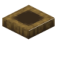
兽巢wan_ancient_beasts:nest · 方块
橙色悬挂式滑翔器wan_ancient_beasts:orange_hang_glider · 物品
古生物学家刷怪蛋wan_ancient_beasts:paleontologist_spawn_egg · 物品
粉色悬挂式滑翔器wan_ancient_beasts:pink_hang_glider · 物品
紫色悬挂式滑翔器wan_ancient_beasts:purple_hang_glider · 物品
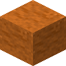
红流沙wan_ancient_beasts:quick_red_sand · 方块红流沙桶
wan_ancient_beasts:quick_red_sand_bucket · 物品
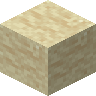
流沙wan_ancient_beasts:quick_sand · 方块流沙桶
wan_ancient_beasts:quick_sand_bucket · 物品
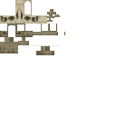
Raider Skullwan_ancient_beasts:raider_skull · 方块
生远古兽肉wan_ancient_beasts:raw_ancient_meat · 物品
红色悬挂式滑翔器wan_ancient_beasts:red_hang_glider · 物品
加固盾牌wan_ancient_beasts:reinforced_shield · 物品
Smithing Templatewan_ancient_beasts:sniff_armor_trim_smithing_template · 物品
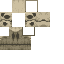
嗅探兽头颅wan_ancient_beasts:sniffer_skull · 方块
翱翔鸟蛋wan_ancient_beasts:soarer_egg · 方块翱翔鸟头颅
wan_ancient_beasts:soarer_skull · 方块
翱翔鸟刷怪蛋wan_ancient_beasts:soarer_spawn_egg · 物品
Smithing Templatewan_ancient_beasts:spike_armor_trim_smithing_template · 物品
尖刺陶片wan_ancient_beasts:spike_pottery_sherd · 物品
麦秸稻草方块wan_ancient_beasts:straw_block · 方块
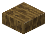
麦秸稻草板砖wan_ancient_beasts:straw_slab · 方块
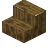
麦秸稻草楼梯wan_ancient_beasts:straw_stairs · 方块
漫步陶片wan_ancient_beasts:stroll_pottery_sherd · 物品
破浪兽盔甲wan_ancient_beasts:surfer_armor · 物品
破浪兽蛋wan_ancient_beasts:surfer_egg · 方块
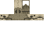
破浪兽头颅wan_ancient_beasts:surfer_skull · 方块
破浪兽刷怪蛋wan_ancient_beasts:surfer_spawn_egg · 物品
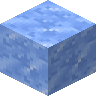
可疑冰块wan_ancient_beasts:suspicious_ice · 方块
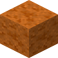
可疑红沙wan_ancient_beasts:suspicious_red_sand · 方块
浪潮陶片wan_ancient_beasts:tide_pottery_sherd · 物品
毒棘鱼wan_ancient_beasts:toxlacanth · 物品毒棘鱼桶
wan_ancient_beasts:toxlacanth_bucket · 物品
毒棘鱼刷怪蛋wan_ancient_beasts:toxlacanth_spawn_egg · 物品
巨行兽蛋wan_ancient_beasts:walker_egg · 方块
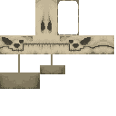
巨行兽头颅wan_ancient_beasts:walker_skull · 方块
巨行兽刷怪蛋wan_ancient_beasts:walker_spawn_egg · 物品
白色悬挂式滑翔器wan_ancient_beasts:white_hang_glider · 物品
黄色悬挂式滑翔器wan_ancient_beasts:yellow_hang_glider · 物品